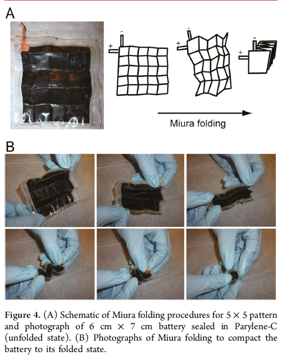
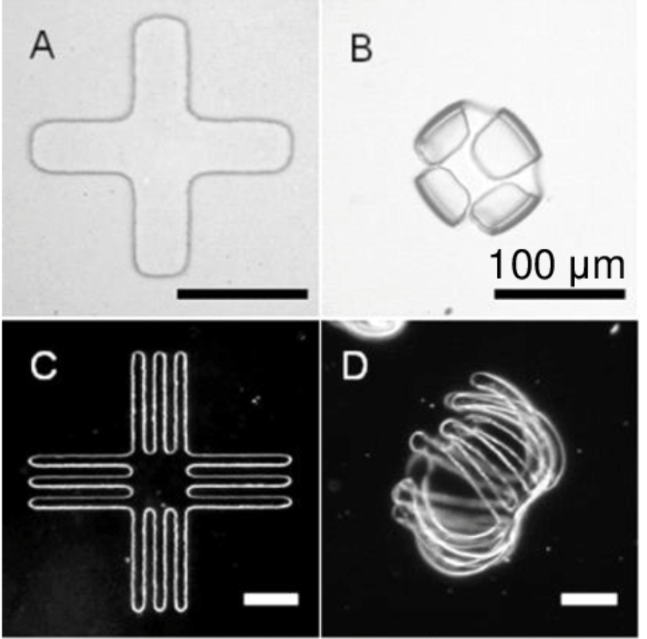

Engineering
Origami and folding algorithms are widely used in various branches of engineering from biomedical to mechanical and many more!
- Automobile Manufacturing: Christoffer Cromvik (Numerical Folding of Airbags Based on Optimization and Origami) provides an application in mechanical engineering, outlining an optimization method for allowing airbags to be fitted into a smaller volume, while keeping the ability to deploy them quickly to prevent the injuries of the passengers.
- Self-folding “intelligent” structures: (“Origami-Inspired Active Structures: A Synthesis and Review” by Edwin A Peraza-Hernandez, Darren J Hartl, Richard J Malak Jr and Dimitris C Lagoudas), analyses prior work on self-folding structures and the tools for their design. Several types of materials were studied, with electrical, chemical, magnetic, optical activations of self-folding. It was concluded that a plethora of active material systems exhibit self-folding behaviour due to thermal, chemical, optical, electrical and magnetic interaction. Benefits and drawbacks of designs without pre-engineered hinges were discussed, outlining higher adaptability, but a more complicated fold planning process.
- Lithium battery: An important use of origami in engineering is the use of the Miura fold in the Lithium battery. The Miura fold leads to an increase in the energy per footprint area. There is an approximate 14 times increase compared to planar 5*5 cell. The working principle of the battery is based on electrochemistry.

